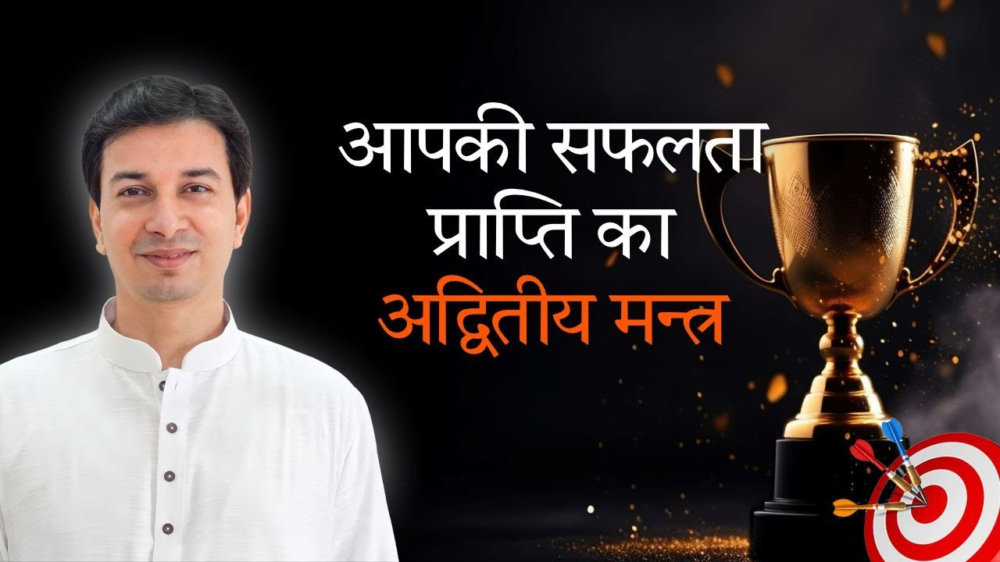

हम सब कुछ न कुछ करते रहते हैं: नौकरी, व्यापार, विवाह, घर-गृहस्थी। पर क्या आपने कभी सोचा है कि आप यह सब क्यों करते हैं?
आचार्य उपेंद्र जी एक छोटी सी बात कहते हैं जो पूरे जीवन की दिशा बदल सकती है: कर्म करने के दो तरीके हैं, और उनमें से केवल एक ही सच्चे आनंद तक ले जाता है।
क्या मैं केवल बदले में कुछ पाने के लिए काम कर रहा हूं?
पहला तरीका है खुश होने के लिए करना। मुझे वेतन चाहिए, पदोन्नति चाहिए, इसलिए मैं काम कर रहा हूं। बदले में कुछ मिलेगा, इसलिए कर रहा हूं।
यही भाव रिश्तों में भी आ जाता है। विवाह इसलिए कि कुछ आनंद मिलेगा, घर चलेगा, दूसरा वेतन भी जुड़ जाएगा। दो चिकित्सक विवाह करते हैं ताकि उनका चिकित्सालय चले।
यहां अपेक्षा आ गई। और जहां अपेक्षा है, वहां निःस्वार्थ प्रेम (unconditional love) नहीं है। सामने वाले में मैंने अपना लाभ देखा, यानी स्वार्थ।
आचार्य जी स्पष्ट कहते हैं: जब कोई काम खुश होने के लिए किया जाता है, तो उसमें खुशी टिकती नहीं। कुछ समय बाद दुख ही आता है।
आज आप जो काम कर रहे हैं, क्या उसका एकमात्र कारण उसके बदले में मिलने वाली चीज है?
खुश होकर करना: जब काम ही आनंद हो
दूसरा तरीका है खुश होकर करना। व्यापार करना है, पर पैसा कमाने के लिए नहीं। मुझे कोई वस्तु बनानी आती है या कोई सेवा देनी आती है, और वही मेरी लगन (passion) है।
उसमें मुझे पैसे के बिना भी आनंद आता है। अब मैं बस उसे दूसरों के साथ बांट रहा हूं।
आचार्य जी चित्रकार का उदाहरण देते हैं। चित्र बनाना उसे वैसे भी अच्छा लगता है। वही चित्र जब वह दूसरों को देता है, तो पैसा भी मिल जाता है। पर वह खुश होने के लिए नहीं बना रहा, वह खुश होकर बना रहा है। किसी पुरस्कार के बिना भी उसे पहले से आनंद आता था।
"खुश होकर करना है, खुश होने के लिए नहीं।"
कर्मयोग का द्वार: काम खेल जैसा लगे
आचार्य जी बताते हैं कि भगवद्गीता में भी यही संकेत है: जो अपनी लगन का काम करता है, वही आगे बढ़ता है। जो आपको प्रिय है वह कीजिए, और जो कर रहे हैं उससे प्रेम कीजिए।
तभी आप मोक्ष (मुक्ति) की ओर बढ़ सकते हैं, तभी आप कर्मयोग के पात्र बनते हैं। कर्मयोग यानी कर्म को ही साधना बना लेना।
कसौटी सरल है: काम, काम नहीं बल्कि खेल लगना चाहिए। उसमें प्रसन्नता महसूस होनी चाहिए।
क्या आपके दिन में कोई ऐसा काम है जो आपको खेल जैसा लगता है?
निःस्वार्थ प्रेम: दूसरों के लिए भी, स्वयं के लिए भी
यह आनंद निःस्वार्थ प्रेम के बिना संभव नहीं। प्रेम उसके लिए जिसके लिए आप काम कर रहे हैं, और स्वयं के लिए भी। करते समय आपको खुद भी अच्छा लगना चाहिए।
आचार्य जी एक स्त्री का उदाहरण देते हैं जिसे भोजन बनाना अच्छा लगता है। वह ससुराल में भी अच्छा बनाएगी, यहां भी। क्योंकि वह आरंभ से ही प्रसन्न है।
उसका भाव यह नहीं कि "यह करूंगी तो यह मिलेगा, वह करूंगी तो वह मिलेगा"। वह काम उसका स्वभाव है।
आचार्य जी स्वयं क्यों सिखाते हैं
अंत में आचार्य जी अपना ही उदाहरण देते हैं।
"मुझे सिखाना प्रिय है, पर मुझे सीखना भी प्रिय है।"
इसलिए वे नया-नया सीखते रहते हैं और जो सीखा, वह हमें देते रहते हैं। यही काम उनके लिए सबसे उचित है, क्योंकि वह खुश होकर किया जाता है।
मुख्य बातें
- कर्म के दो तरीके हैं: खुश होने के लिए करना, और खुश होकर करना।
- बदले में कुछ पाने के लिए किया गया काम अपेक्षा और स्वार्थ लाता है, और अंततः दुख।
- वह काम चुनिए जिसमें पैसे या पुरस्कार के बिना भी आनंद आता हो।
- जो प्रिय है वह कीजिए, और जो कर रहे हैं उससे प्रेम कीजिए; यही कर्मयोग की पात्रता है।
- काम खेल जैसा लगना चाहिए।
- निःस्वार्थ प्रेम दूसरों के लिए भी हो और स्वयं के लिए भी।
